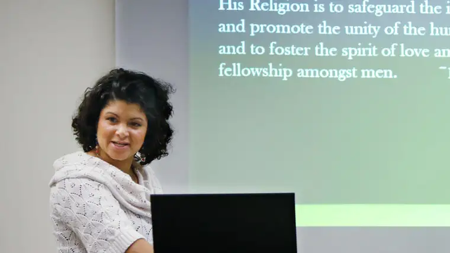

Michael Vosburg / Forum Photo Editor
FARGO — Growing up near Chicago, Richard Henderson delivered newspapers. But before heading out on a delivery, he’d read them, top to bottom.
“Back then, in the 1960s, there was so much happening,” he says. “I remember when Martin Luther King Jr. came to Chicago and was hit with a brick. For a young person, that really made an impression.”
Raised Lutheran, Henderson grew unsatisfied with the prominent religions’ claims that they were the only true religion. “That didn’t seem quite right to me,” he says. “I was puzzled how they all fit together.”
In college in Moorhead, Henderson was intrigued by the Baha’i community.
“What really caught my attention was their beliefs about racial unity,” he says. “They were also a very integrated group of people who were walking the walk.”
The Baha’i faith teaches that all religions come from the same source. “It’s all part of the progressive unfolding of God’s plan for human beings to fulfill their potential,” Henderson explains. “Every new faith brings new teachings to lift people a little more and move them further along the way.”
In 1971, he became a Baha’i and has been for almost 50 years.
The local community includes around 30 to 35 people, he says, who meet weekly in members’ homes. There are no clergy.
Gatherings are casual and might include devotionals, prayer, reading from Baha’i and other Scripture, and spending time discussing the teachings, followed with some social time.
A forthcoming event to celebrate the 200th birthdate of the founder of the religion, Baha’u’llah, who was born in Iran in 1817, will educate and answer questions people might have.
Henderson says Baha’u’llah believed he was one of many messengers God sent to help his people thrive, along with others like Abraham, Moses, Jesus and Muhammad, and that all the messengers who’ve come, or who will, are equal in station.
“At the core lies the belief that God exists, that we are responsible for the lives we lead, and that we’re spiritual beings,” he says. “The highest purpose of our lives is to fulfill our spiritual potential.”
Recognizing truth in one’s faith, Henderson says, comes down to purity of heart, and “if you are truly seeking, not just for yourself but to know what’s true.”
Marian Kadrie, another longstanding member of the local Baha’i community, says the celebration “will be about how the light of God cannot be extinguished; it will survive, no matter how much man will oppose it.”
Her granddaughter, Cassie Wiste, says she especially appreciates the faith’s welcoming aspect. Public gatherings often include people of other faiths, who are integrated into their activities.
World peace is a specific objective of the Baha’i. “I believe we can get there if we want to,” Wiste says. “We just need to make an effort to love one another.”
With 5 to 7 million adherents of Baha’i worldwide, Wiste says, the celebrations all over the world have already begun.
“The main part of the event is celebrating the glory of God and his continued love for humanity, his blessings and how great art thou,” Kadrie says, noting that Baha’u’llah emphasized equality of men and women, education of all children and the elimination of prejudice.
“We are destined to become one family, united in love,” she says. “This celebration is really the celebration of the glory of God.”
If You Go
What: The Light of Unity Festival, hosted by the Fargo-Moorhead Baha’i Faith Community, will include a presentation on the Baha’i founder, Baha’u’llah; current practices and activities; music and a children’s program, with light refreshments to follow
When: 2 p.m., Sunday, Oct. 22
Where: DoubleTree by Hilton, 825 E. Beaton Dr., West Fargo
Contact: Richard Henderson, 701-740-5339
[For the sake of having a repository for my newspaper columns and articles, I reprint them here, with permission, a week after their run date. The preceding ran in The Forum newspaper on Oct. 14, 2017.]